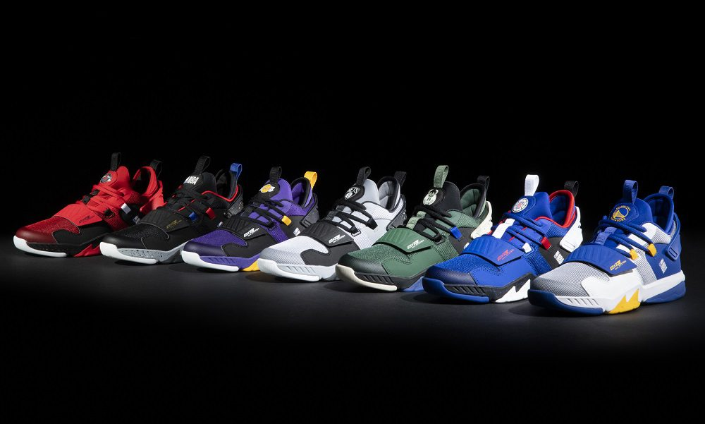
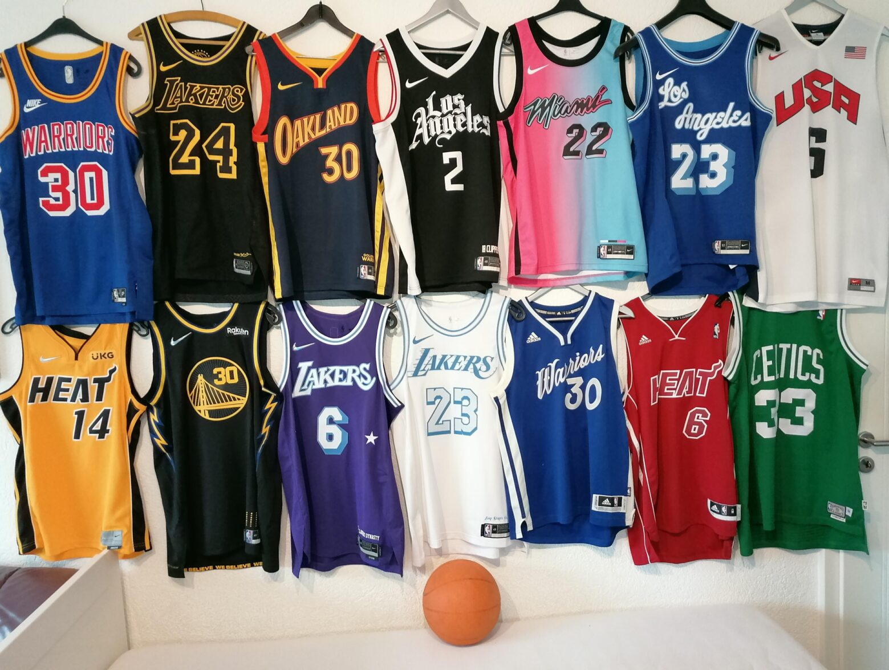
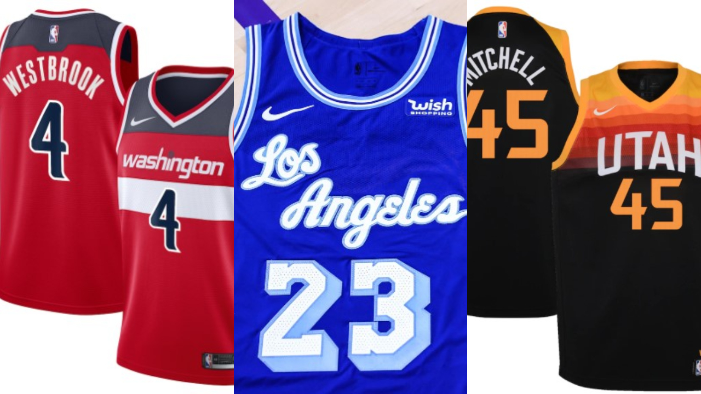
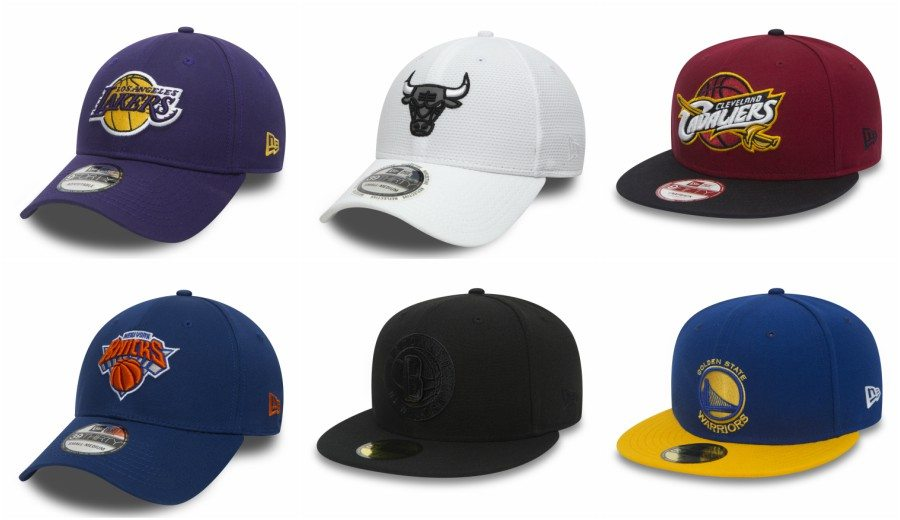

Fabricar prácticamente cualquier zapato implica curtido; craqueo (parte de procesar aceite en caucho y plástico), fundición o refinación de hierro (usar coque a partir de carbón, piedra caliza para convertir en "arrabio"); fabricación de goma (incluyendo petróleo y gas natural), entre otros procesos. Una vez que se fabrican estos bienes primarios, se deben desarrollar hasta convertirse en cosas tales como suelas, ojales, cordones y la parte superior del tenis. La fabricación moderna de tenis de basketball Nike comenzó con la Nike Air Force One. Estos fueron los primeros tenis de basketball Nike hechos con el colchón de aire en la suela. Añadir otra característica aumenta el proceso ya alto en recursos. Los Nike Air Max Up Tempo presentan cojines de aire visibles hechos a fondo con el proceso de moldeado por soplado. De acuerdo con la página del fabricante de colchones de aire de Nike, IHM, los gránulos de plástico se hacen rollos u hojas utilizando equipo especializado que aplica calor y presión. El moldeado por soplado se realiza al insertar poliuretano que se inyecta con grandes moléculas de gas a presión en las plantas, después de que se formó la suela.
Las camisetas son un elemento clave en la historia del baloncesto, más aún en la NBA. Son un aspecto estético muy importante, que también desempeña diferentes funciones en el campo de juego. Por esta razón, han evolucionado con el paso del tiempo , hasta llegar a ser un objeto de colección entre los jugadores y fanáticos.  
Después de décadas como la gorra oficial en el campo de la MLB, New Era puso el ojo en redondear su exclusividad con los deportes más importantes de Estados Unidos. En 2012, mismo año en el que abrimos oficinas en México, New Era se convirtió en la gorra oficial de las laterales de la NFL; en 2016, lo hizo como la gorra auténtica de la NBA. Así es como New Era es la única marca en la historia del deporte profesional estadounidense en ser oficial de los tres deportes más grandes simultáneamente. 